Recettes salées
Première partie
Accras, boudin créole, colombo, bokit, court-bouillon, blaff, matété de crabes, bébélé de Marie-Galante… La cuisine créole de Guadeloupe mêle les héritages amérindien, africain, européen et indien. Elle aime le citron vert, le piment, le bois d'Inde, les cives et la poudre à colombo. Attention : le piment antillais est très fort, on le dose avec prudence.
18 recettes
Accras de morue

🧺Les ingrédients
- 250 gde morue salée
- 250 gde farine
- 25 cld'eau ou de lait
- 1sachet de levure chimique
- 2gousses d'ail
- 3cives (ciboules) et un peu de persil
- ½piment antillais (selon le goût)
- thym, poivre, huile de friture
👩🍳La préparation
- Dessaler : La veille, faites tremper la morue dans de l'eau froide, en changeant l'eau plusieurs fois.
- Émietter : Faites-la pocher 10 minutes, égouttez-la, retirez la peau et les arêtes, puis émiettez-la.
- La pâte : Mélangez la farine, la levure et l'eau pour obtenir une pâte épaisse. Laissez reposer 1 heure.
- Assaisonner : Ajoutez la morue, l'ail, les cives, le persil et le thym hachés, le poivre et un peu de piment.
- Frire : Avec deux cuillères, faites tomber des petites boules de pâte dans l'huile chaude. Retournez-les quand elles sont dorées, puis égouttez-les.
🥤Les boissons d'accompagnement
Ti-punch
Rhum agricole blanc, citron vert et sucre de canne · pour les adultes
Citronnade au sirop de batterie
Citron vert, eau et sirop de canne, sans alcool
Jus de maracudja
Fruit de la passion pressé, sans alcool
Boudin créole
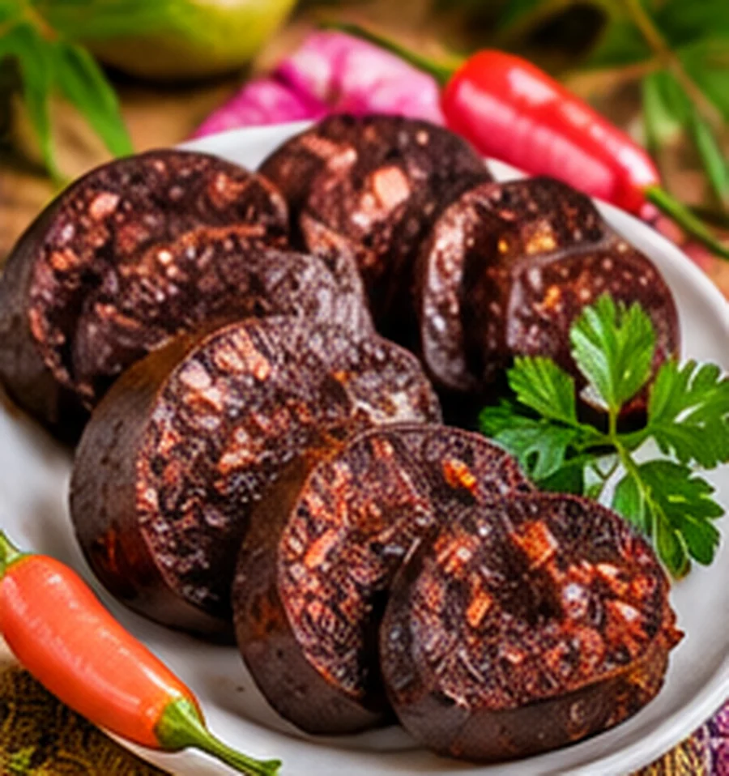
🧺Les ingrédients
- 1 lde sang de porc (chez le boucher)
- 300 gde pain rassis
- 50 clde lait
- 4cives et 2 oignons
- 4gousses d'ail
- 1piment antillais
- 3 mde boyaux de porc nettoyés
- thym, persil, bois d'Inde (piment de la Jamaïque), sel, poivre, citron vert
👩🍳La préparation
- Le pain : Faites tremper le pain dans le lait, puis écrasez-le.
- La farce : Faites revenir les oignons, les cives et l'ail hachés. Mélangez avec le pain, les herbes, les épices et le sang.
- Remplir : Remplissez les boyaux à l'aide d'un entonnoir, sans trop serrer, et nouez en chapelets.
- Pocher : Plongez les boudins dans une eau frémissante, jamais bouillante, environ 20 minutes.
- Servir : Servez tiède, avec un filet de citron vert.
🥤Les boissons d'accompagnement
Ti-punch
Rhum agricole blanc, citron vert et sucre de canne · pour les adultes
Bière blonde des Antilles
Bière légère et désaltérante · pour les adultes
Jus de goyave
Jus de fruit pays, sans alcool
Féroce d'avocat
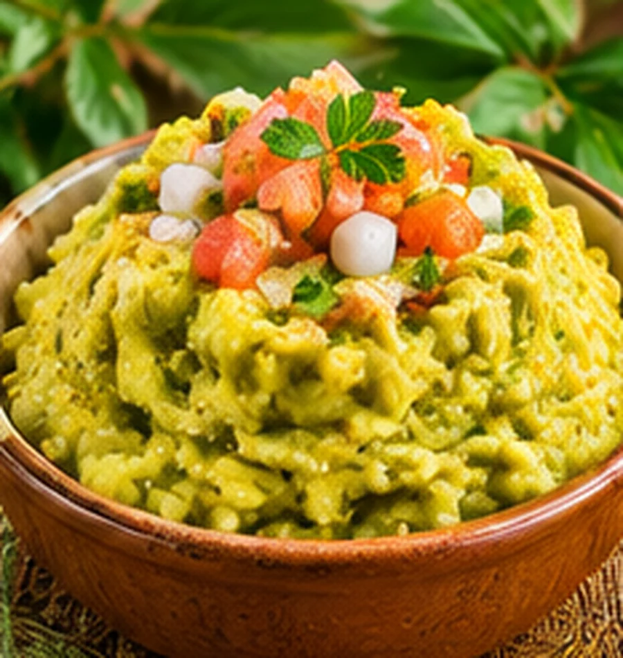
🧺Les ingrédients
- 2avocats bien mûrs
- 150 gde morue dessalée
- 80 gde farine de manioc
- 1citron vert
- 1gousse d'ail
- 2cives
- piment, huile, sel, poivre
👩🍳La préparation
- La morue : Faites griller ou pocher la morue dessalée, puis émiettez-la.
- Écraser : Écrasez la chair des avocats avec le jus de citron vert.
- Mélanger : Ajoutez la morue, l'ail et les cives hachés, un peu de piment et d'huile.
- Lier : Incorporez la farine de manioc jusqu'à obtenir une pâte souple.
- Servir : Servez frais, en boule ou dans les écorces d'avocat.
🥤Les boissons d'accompagnement
Ti-punch
Rhum agricole blanc, citron vert et sucre de canne · pour les adultes
Citronnade au sirop de batterie
Citron vert, eau et sirop de canne, sans alcool
Eau de coco
L'eau d'une noix de coco verte, sans alcool
Colombo de poulet
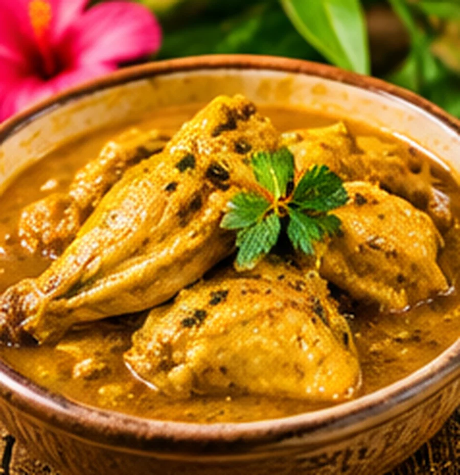
🧺Les ingrédients
- 1,5 kgde poulet en morceaux
- 3 c. à soupede poudre à colombo
- 2oignons
- 4gousses d'ail
- 2pommes de terre et 1 aubergine
- 1christophine (chayotte)
- 2citrons verts
- thym, persil, piment, huile, sel
👩🍳La préparation
- Mariner : Frottez le poulet de citron, puis faites-le mariner avec l'ail, le thym et une cuillère de colombo.
- Dorer : Faites revenir les morceaux dans l'huile avec les oignons émincés.
- Épicer : Ajoutez le reste de la poudre à colombo, mélangez 2 minutes.
- Mijoter : Ajoutez les légumes en morceaux, couvrez d'eau et laissez mijoter 45 minutes.
- Finir : Ajoutez un filet de citron vert et le persil. Servez avec du riz blanc.
🥤Les boissons d'accompagnement
Vin rosé de Provence
AOC Côtes-de-Provence · rosé sec
Bière blonde des Antilles
Bière légère et désaltérante · pour les adultes
Jus de gingembre
Gingembre râpé, citron et sucre, sans alcool
Colombo de cabri

🧺Les ingrédients
- 1,5 kgde viande de cabri en morceaux
- 4 c. à soupede poudre à colombo
- 2oignons
- 5gousses d'ail
- 2aubergines et 2 pommes de terre
- 2citrons verts
- bois d'Inde, thym, piment, huile, sel
👩🍳La préparation
- Laver : Lavez la viande à l'eau citronnée et faites-la mariner avec l'ail et le thym.
- Dorer : Faites-la revenir dans l'huile avec les oignons.
- Épicer : Saupoudrez de colombo et mélangez.
- Mijoter : Couvrez d'eau, ajoutez les légumes, le bois d'Inde et le piment entier. Laissez cuire 1 h 30 à petit feu.
- Servir : Servez avec du riz et quelques gouttes de citron vert.
🥤Les boissons d'accompagnement
Vin rosé de Provence
AOC Côtes-de-Provence · rosé sec
Bière blonde des Antilles
Bière légère et désaltérante · pour les adultes
Jus de gingembre
Gingembre râpé, citron et sucre, sans alcool
Bokit
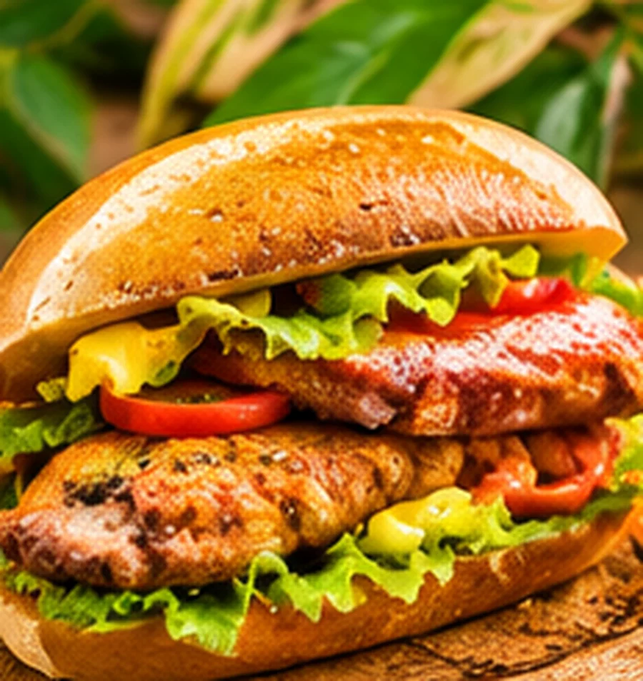
🧺Les ingrédients
- 500 gde farine
- 1sachet de levure de boulanger
- 30 cld'eau tiède
- 10 gde sel
- 2 c. à souped'huile
- garniture : morue en chiquetaille, poulet, crudités, sauce chien, fromage
👩🍳La préparation
- Pétrir : Mélangez la farine, la levure, le sel, l'huile et l'eau. Pétrissez jusqu'à obtenir une pâte souple.
- Laisser lever : Couvrez et laissez reposer 1 heure.
- Former : Divisez en 8 boules, aplatissez-les en galettes d'un demi-centimètre.
- Frire : Faites-les frire dans l'huile chaude : elles gonflent. Retournez-les puis égouttez-les.
- Garnir : Ouvrez-les en deux comme un pain et garnissez au choix.
🥤Les boissons d'accompagnement
Citronnade au sirop de batterie
Citron vert, eau et sirop de canne, sans alcool
Jus de goyave
Jus de fruit pays, sans alcool
Bière blonde des Antilles
Bière légère et désaltérante · pour les adultes
Court-bouillon de poisson

🧺Les ingrédients
- 4tranches de poisson (vivaneau ou thazard)
- 3tomates
- 2oignons
- 3gousses d'ail
- 3citrons verts
- thym, persil, cives, bois d'Inde, piment, rocou (facultatif), huile, sel
👩🍳La préparation
- Mariner : Faites mariner le poisson 1 heure dans le jus de citron, l'ail, le sel et le piment.
- La sauce : Faites revenir les oignons et les tomates en morceaux dans l'huile.
- Mouiller : Ajoutez un verre d'eau, le thym, les cives et le bois d'Inde. Laissez réduire 10 minutes.
- Cuire : Déposez le poisson dans la sauce et faites cuire 10 à 15 minutes à couvert.
- Servir : Arrosez d'un filet de citron et servez avec du riz.
🥤Les boissons d'accompagnement
Vin blanc sec
Un sauvignon frais et vif
Vin rosé de Provence
AOC Côtes-de-Provence · rosé sec
Citronnade au sirop de batterie
Citron vert, eau et sirop de canne, sans alcool
Blaff de poisson

🧺Les ingrédients
- 4petits poissons entiers ou tranches
- 4citrons verts
- 1oignon
- 3gousses d'ail
- cives, thym, persil, bois d'Inde, piment entier, sel
👩🍳La préparation
- Mariner : Faites mariner le poisson 30 minutes dans l'eau, le jus de 2 citrons, l'ail, le sel et le piment.
- Le bouillon : Faites bouillir 1 litre d'eau avec l'oignon, le thym, le bois d'Inde et le piment entier.
- Pocher : Plongez le poisson égoutté et laissez cuire 8 à 10 minutes.
- Parfumer : Ajoutez l'ail écrasé, les cives, le persil et le jus des citrons restants.
- Servir : Servez le poisson dans son bouillon, avec du riz.
🥤Les boissons d'accompagnement
Vin blanc sec
Un sauvignon frais et vif
Citronnade au sirop de batterie
Citron vert, eau et sirop de canne, sans alcool
Eau de coco
L'eau d'une noix de coco verte, sans alcool
Matété de crabes

🧺Les ingrédients
- 6crabes (de terre ou de mer) nettoyés
- 400 gde riz
- 150 gde lard ou de poitrine
- 2oignons
- 4gousses d'ail
- 2citrons verts
- cives, thym, persil, bois d'Inde, piment, colombo, huile
👩🍳La préparation
- Nettoyer : Brossez les crabes, coupez-les en deux et lavez-les à l'eau citronnée.
- Revenir : Faites revenir le lard, les oignons, l'ail et les cives, puis les crabes.
- Mouiller : Ajoutez le thym, le bois d'Inde, le piment et un litre d'eau. Laissez cuire 15 minutes.
- Le riz : Ajoutez le riz et laissez cuire à couvert jusqu'à ce que le liquide soit absorbé.
- Servir : Servez chaud, avec un filet de citron vert.
🥤Les boissons d'accompagnement
Vin rosé de Provence
AOC Côtes-de-Provence · rosé sec
Bière blonde des Antilles
Bière légère et désaltérante · pour les adultes
Jus de goyave
Jus de fruit pays, sans alcool
Fricassée de chatrou
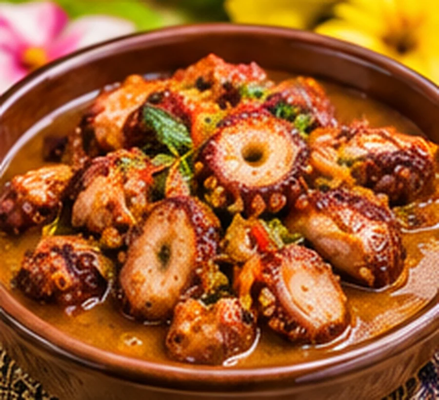
🧺Les ingrédients
- 1 kgde chatrous (petits poulpes) nettoyés
- 2tomates
- 1oignon
- 3gousses d'ail
- 2citrons verts
- cives, thym, persil, piment, huile, sel
👩🍳La préparation
- Attendrir : Battez les poulpes, puis frottez-les au gros sel et au citron et rincez-les.
- Blanchir : Faites-les bouillir 20 minutes, égouttez-les et coupez-les en morceaux.
- Revenir : Faites revenir l'oignon, l'ail, les cives et les tomates dans l'huile.
- Mijoter : Ajoutez les morceaux de poulpe, le thym, le piment et un peu d'eau. Laissez mijoter 30 minutes.
- Servir : Ajoutez le persil et un filet de citron. Servez avec du riz ou des légumes pays.
🥤Les boissons d'accompagnement
Vin blanc sec
Un sauvignon frais et vif
Vin rosé de Provence
AOC Côtes-de-Provence · rosé sec
Citronnade au sirop de batterie
Citron vert, eau et sirop de canne, sans alcool
Dombrés aux ouassous
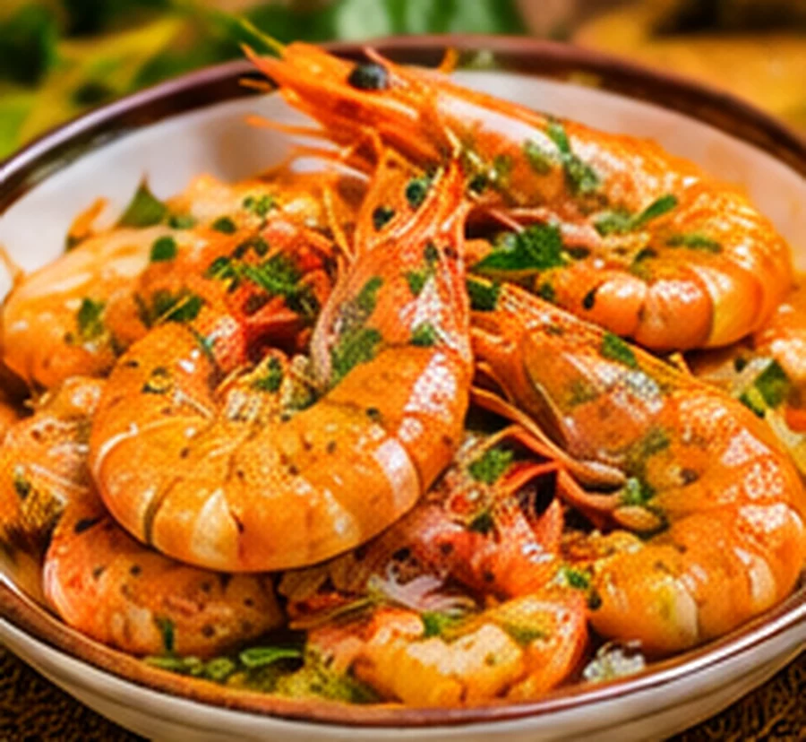
🧺Les ingrédients
- 600 gd'ouassous ou de grosses crevettes
- 250 gde farine
- 1 pincéede sel
- 1oignon
- 2tomates
- 3gousses d'ail
- cives, thym, colombo, piment, citron vert, huile
👩🍳La préparation
- Les dombrés : Mélangez la farine, le sel et un peu d'eau. Roulez la pâte en petits boudins ou en boulettes.
- La sauce : Faites revenir l'oignon, l'ail, les cives et les tomates.
- Mouiller : Ajoutez 75 cl d'eau, le thym et une pincée de colombo. Portez à ébullition.
- Cuire : Ajoutez les dombrés, laissez cuire 15 minutes, puis les ouassous 5 à 8 minutes.
- Servir : Servez bien chaud, avec un filet de citron.
🥤Les boissons d'accompagnement
Vin blanc sec
Un sauvignon frais et vif
Bière blonde des Antilles
Bière légère et désaltérante · pour les adultes
Citronnade au sirop de batterie
Citron vert, eau et sirop de canne, sans alcool
Calalou
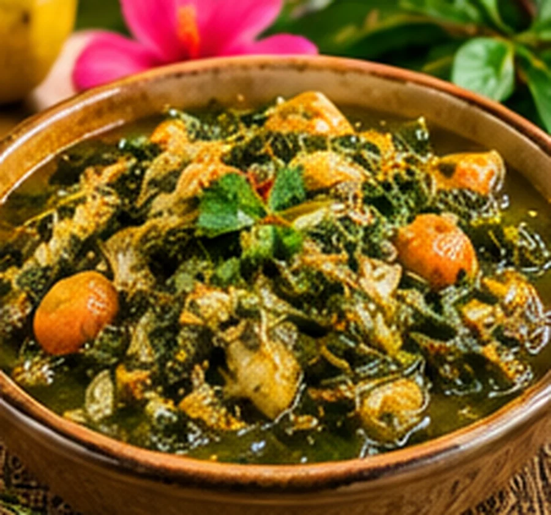
🧺Les ingrédients
- 500 gde feuilles (épinards pays, feuilles de dachine)
- 300 gde gombos
- 250 gde lard salé ou de queue de cochon
- 1oignon
- 3gousses d'ail
- cives, thym, piment, citron vert
👩🍳La préparation
- Dessaler : Faites dessaler la viande salée puis faites-la bouillir 30 minutes.
- Les légumes : Ajoutez les feuilles hachées, les gombos en rondelles, l'oignon et l'ail.
- Mijoter : Laissez cuire à petit feu 30 minutes en remuant.
- Écraser : Écrasez grossièrement au fouet ou au pilon : le calalou doit être épais.
- Servir : Servez avec du riz blanc et un peu de piment.
🥤Les boissons d'accompagnement
Vin rosé de Provence
AOC Côtes-de-Provence · rosé sec
Jus de gingembre
Gingembre râpé, citron et sucre, sans alcool
Eau de coco
L'eau d'une noix de coco verte, sans alcool
Souskaï de mangue verte
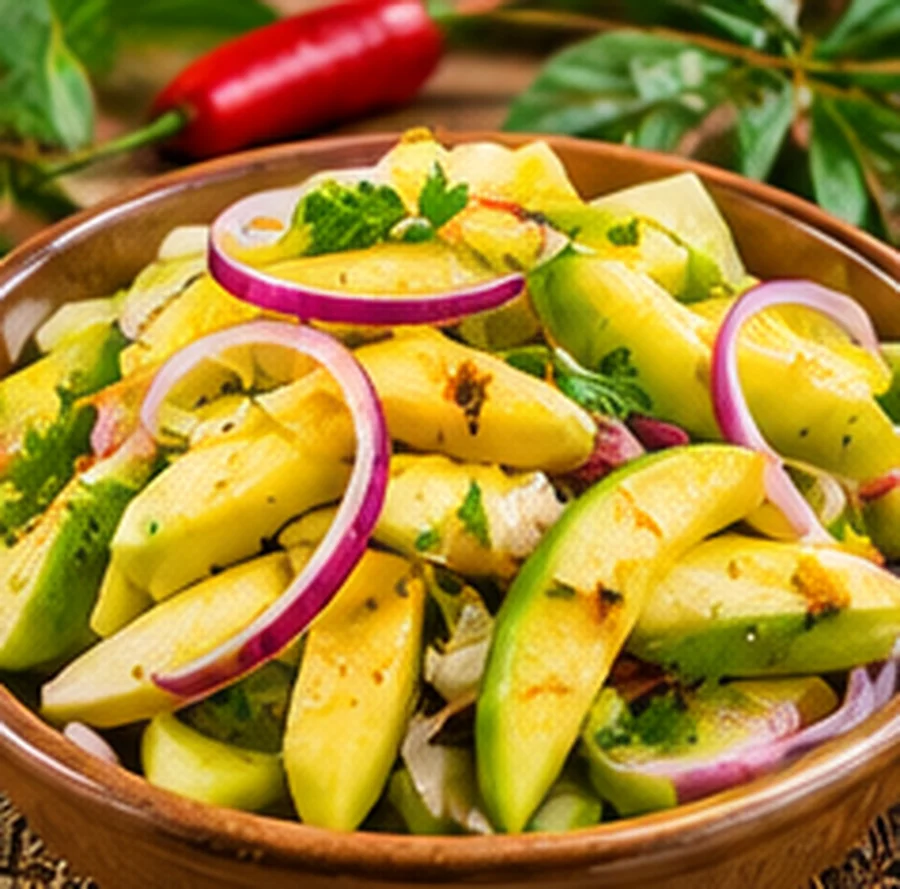
🧺Les ingrédients
- 2mangues vertes (ou des quenettes, des prunes de Cythère)
- 2citrons verts
- 2gousses d'ail
- 1petit piment
- sel, poivre, un peu de persil
👩🍳La préparation
- Éplucher : Épluchez les mangues vertes et coupez-les en lamelles.
- Assaisonner : Arrosez de jus de citron, ajoutez l'ail écrasé, le piment haché, le sel et le poivre.
- Mélanger : Mélangez bien et ajoutez le persil.
- Reposer : Laissez mariner 30 minutes au frais.
- Servir : Servez à l'apéritif, avec des cure-dents.
🥤Les boissons d'accompagnement
Ti-punch
Rhum agricole blanc, citron vert et sucre de canne · pour les adultes
Citronnade au sirop de batterie
Citron vert, eau et sirop de canne, sans alcool
Eau de coco
L'eau d'une noix de coco verte, sans alcool
Christophines gratinées
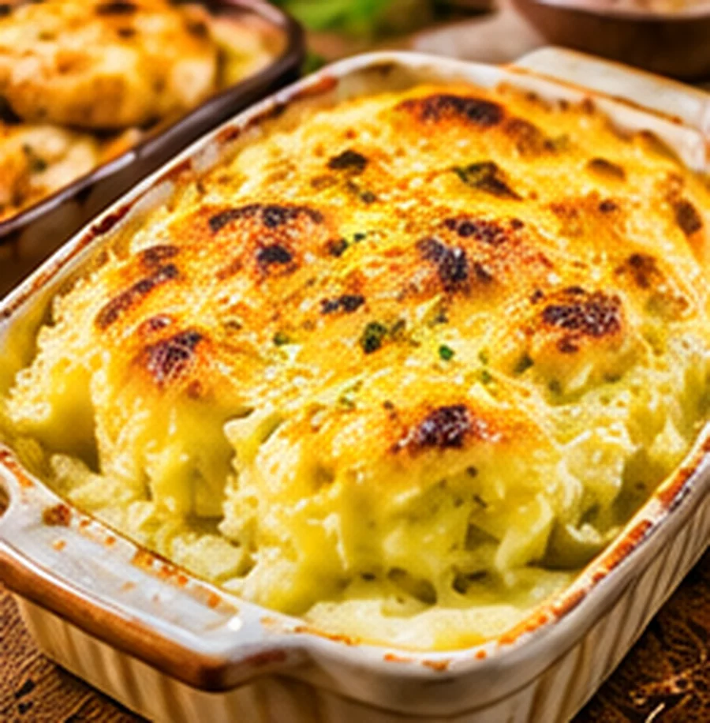
🧺Les ingrédients
- 4christophines
- 100 gde jambon ou de morue (facultatif)
- 1oignon
- 2gousses d'ail
- 20 gde beurre
- 80 gde fromage râpé
- chapelure, persil, piment, sel, poivre
👩🍳La préparation
- Cuire : Faites cuire les christophines coupées en deux 20 minutes à l'eau salée.
- Évider : Retirez la chair à la cuillère sans abîmer la peau.
- La farce : Écrasez la chair et mélangez-la avec l'oignon et l'ail revenus au beurre, le jambon, le persil et un peu de fromage.
- Remplir : Remplissez les demi-christophines, couvrez de fromage et de chapelure.
- Gratiner : Faites gratiner 20 minutes au four à 200 °C.
🥤Les boissons d'accompagnement
Vin blanc sec
Un sauvignon frais et vif
Vin rosé de Provence
AOC Côtes-de-Provence · rosé sec
Jus de maracudja
Fruit de la passion pressé, sans alcool
Riz aux pois
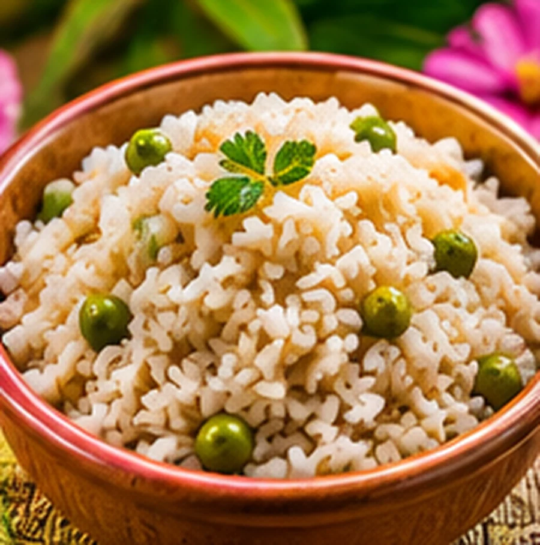
🧺Les ingrédients
- 300 gde haricots rouges ou de pois d'Angole
- 400 gde riz
- 100 gde lard (facultatif)
- 1oignon
- 2gousses d'ail
- cives, thym, girofle, piment entier, sel
👩🍳La préparation
- Tremper : La veille, mettez les haricots à tremper dans de l'eau froide.
- Cuire les pois : Faites-les cuire 1 heure dans de l'eau non salée avec le thym.
- Revenir : Faites revenir le lard, l'oignon, l'ail et les cives.
- Le riz : Ajoutez le riz, les pois et leur eau (environ deux fois le volume du riz), salez, ajoutez le piment entier.
- Cuire : Laissez cuire à couvert à petit feu jusqu'à absorption, 20 minutes environ.
🥤Les boissons d'accompagnement
Vin rosé de Provence
AOC Côtes-de-Provence · rosé sec
Jus de goyave
Jus de fruit pays, sans alcool
Eau de coco
L'eau d'une noix de coco verte, sans alcool
Sauce chien

🧺Les ingrédients
- 1oignon
- 3cives
- 2gousses d'ail
- 1petit piment
- 1bouquet de persil
- 2citrons verts
- 4 c. à soupe d'huile, eau chaude, sel, poivre
👩🍳La préparation
- Hacher : Hachez très finement l'oignon, les cives, l'ail, le persil et le piment.
- Assaisonner : Mettez-les dans un bol avec le sel, le poivre et le jus des citrons.
- L'huile : Ajoutez l'huile.
- L'eau chaude : Versez 4 cuillères à soupe d'eau bouillante : elle « cuit » légèrement les herbes.
- Servir : Laissez refroidir et servez avec les grillades, le poisson ou les bokits.
🥤Les boissons d'accompagnement
Ti-punch
Rhum agricole blanc, citron vert et sucre de canne · pour les adultes
Citronnade au sirop de batterie
Citron vert, eau et sirop de canne, sans alcool
Bière blonde des Antilles
Bière légère et désaltérante · pour les adultes
Bébélé

🧺Les ingrédients
- 1 kgde tripes (gras-double) bien nettoyées
- 300 gde queue de cochon salée
- 4bananes vertes
- ½fruit à pain
- 200 gde farine pour les dombrés
- 2oignons
- ail, cives, thym, bois d'Inde, piment, citron vert
👩🍳La préparation
- Nettoyer : Lavez les tripes à l'eau citronnée et faites dessaler la queue de cochon.
- Cuire les viandes : Faites-les cuire 1 h 30 avec les oignons, l'ail, le thym et le bois d'Inde.
- Les légumes : Ajoutez les bananes vertes et le fruit à pain en morceaux.
- Les dombrés : Formez de petites boulettes de farine et d'eau et ajoutez-les au bouillon.
- Servir : Laissez cuire encore 30 minutes. Le bébélé doit être épais.
🥤Les boissons d'accompagnement
Vin rosé de Provence
AOC Côtes-de-Provence · rosé sec
Bière blonde des Antilles
Bière légère et désaltérante · pour les adultes
Jus de gingembre
Gingembre râpé, citron et sucre, sans alcool
Poulet boucané
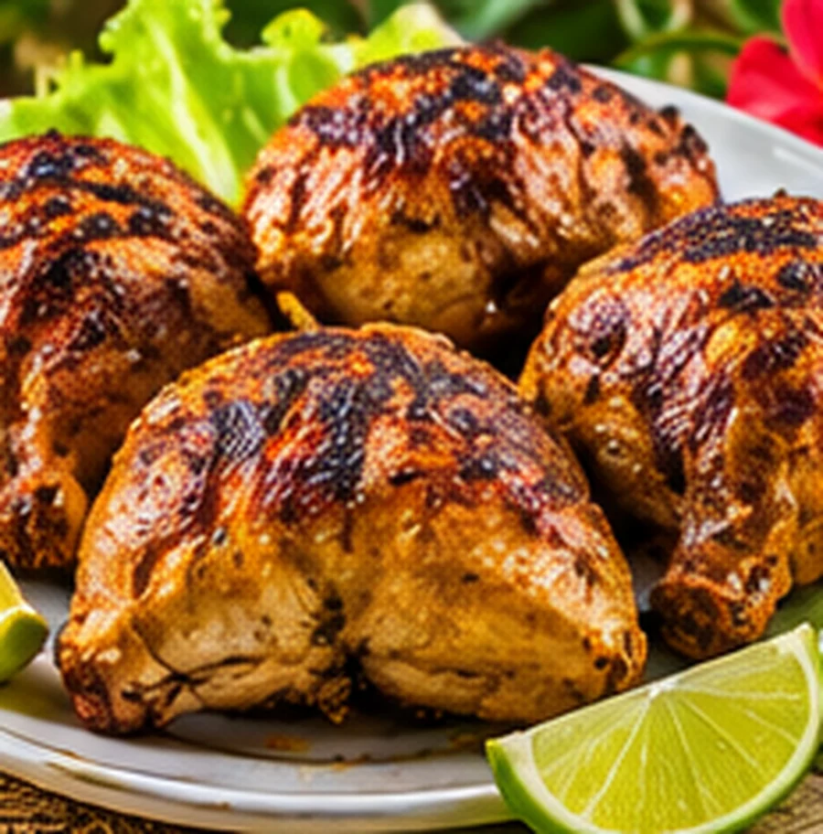
🧺Les ingrédients
- 1poulet coupé en deux ou en morceaux
- 3citrons verts
- 4gousses d'ail
- 1piment
- thym, bois d'Inde, sel, poivre, huile ; bois et bagasse de canne pour le feu
👩🍳La préparation
- Mariner : La veille, faites mariner le poulet avec le citron, l'ail, le piment, le thym, le sel et l'huile.
- Le feu : Préparez un feu doux de bois, recouvert de bagasse ou de feuilles de canne pour faire de la fumée.
- Boucaner : Posez le poulet sur la grille, couvrez d'une tôle ou d'un couvercle, et laissez fumer 1 h à 1 h 30 en le retournant.
- Vérifier : Le poulet est prêt quand le jus qui coule est clair.
- Servir : Servez avec de la sauce chien et du riz aux pois.
🥤Les boissons d'accompagnement
Vin rosé de Provence
AOC Côtes-de-Provence · rosé sec
Bière blonde des Antilles
Bière légère et désaltérante · pour les adultes
Citronnade au sirop de batterie
Citron vert, eau et sirop de canne, sans alcool
Recettes sucrées
Deuxième partie
Tourment d'amour des Saintes, blanc-manger, sorbet coco, flan, tablettes coco, doucelettes, confiture de goyave… La coco, la vanille, la cannelle, la muscade et le sucre de canne parfument les desserts guadeloupéens. On termine par des boissons de fête : le chocolat de communion, le jus de groseille pays et le chodo.
16 recettes
Tourment d'amour

🧺Les ingrédients
- 250 gde farine
- 125 gde beurre
- 80 gde sucre
- 1œuf pour la pâte + 3 œufs pour la génoise
- 300 gde confiture de coco
- 90 gde sucre et 90 g de farine pour la génoise
- vanille, zeste de citron vert
👩🍳La préparation
- La pâte : Mélangez la farine, le beurre, le sucre et 1 œuf. Laissez reposer 30 minutes.
- Foncer : Étalez la pâte dans des petits moules à tarte.
- La confiture : Étalez une couche de confiture de coco au fond.
- La génoise : Battez 3 œufs avec le sucre jusqu'à ce que le mélange blanchisse, ajoutez la farine, la vanille et le zeste. Versez sur la confiture.
- Cuire : Faites cuire 25 à 30 minutes à 180 °C.
🥤Les boissons d'accompagnement
Café de Guadeloupe
Le café « Bonifieur » des hauteurs de Basse-Terre
Eau de coco
L'eau d'une noix de coco verte, sans alcool
Rhum vieux de Guadeloupe
Rhum vieilli en fût de chêne · pour les adultes
Blanc-manger coco
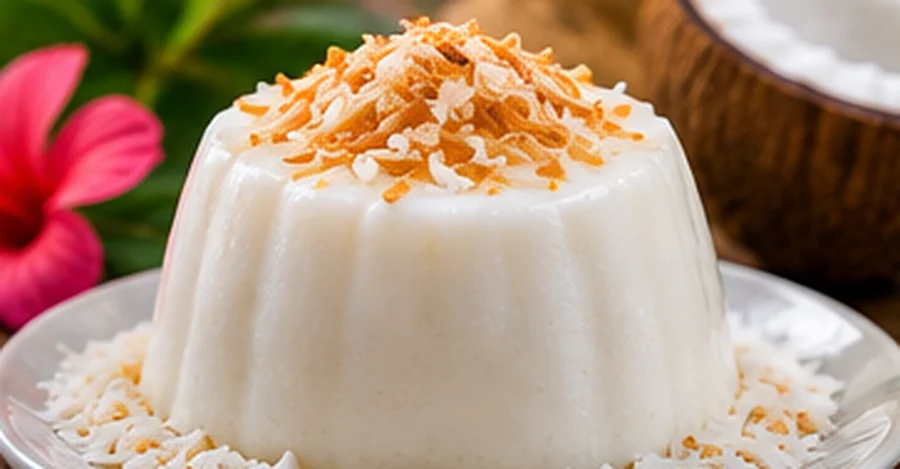
🧺Les ingrédients
- 40 clde lait de coco
- 40 clde lait concentré sucré
- 20 clde lait
- 4feuilles de gélatine
- cannelle, muscade, vanille, zeste de citron vert, coco râpée
👩🍳La préparation
- Ramollir : Faites tremper la gélatine dans l'eau froide.
- Chauffer : Faites chauffer doucement les laits avec la cannelle, la vanille et le zeste.
- Lier : Hors du feu, ajoutez la gélatine essorée et mélangez bien.
- Mouler : Versez dans un moule ou des verrines.
- Prendre : Laissez prendre 4 heures au réfrigérateur et servez avec un peu de coco râpée.
🥤Les boissons d'accompagnement
Café de Guadeloupe
Le café « Bonifieur » des hauteurs de Basse-Terre
Eau de coco
L'eau d'une noix de coco verte, sans alcool
Shrubb
Liqueur d'écorces d'orange macérées dans le rhum, boisson de Noël · pour les adultes
Sorbet coco

🧺Les ingrédients
- 2noix de coco sèches (ou 80 cl de lait de coco)
- 40 clde lait concentré sucré
- cannelle, muscade, vanille, zeste de citron vert ; glace pilée et gros sel pour la sorbetière
👩🍳La préparation
- Le lait de coco : Râpez la chair des noix, mélangez-la avec un litre d'eau chaude, puis pressez-la dans un linge.
- Parfumer : Ajoutez le lait concentré, la vanille, la cannelle, la muscade et le zeste.
- La sorbetière : Versez dans le cylindre de la sorbetière entouré de glace et de gros sel.
- Tourner : Tournez la manivelle pendant 20 à 30 minutes, jusqu'à ce que le sorbet prenne.
- Servir : Servez aussitôt, en cornet ou en coupe.
🥤Les boissons d'accompagnement
Eau de coco
L'eau d'une noix de coco verte, sans alcool
Café de Guadeloupe
Le café « Bonifieur » des hauteurs de Basse-Terre
Jus de maracudja
Fruit de la passion pressé, sans alcool
Flan coco

🧺Les ingrédients
- 4œufs
- 40 clde lait de coco
- 40 clde lait concentré sucré
- 20 clde lait
- 100 gde sucre pour le caramel
- vanille, coco râpée
👩🍳La préparation
- Le caramel : Faites un caramel blond avec le sucre et un peu d'eau, versez-le dans le moule.
- Mélanger : Battez les œufs et ajoutez les laits, la vanille et la coco râpée.
- Verser : Versez la préparation sur le caramel.
- Cuire : Faites cuire 50 minutes au bain-marie, au four à 170 °C.
- Démouler : Laissez refroidir, puis une nuit au frais avant de démouler.
🥤Les boissons d'accompagnement
Café de Guadeloupe
Le café « Bonifieur » des hauteurs de Basse-Terre
Eau de coco
L'eau d'une noix de coco verte, sans alcool
Rhum vieux de Guadeloupe
Rhum vieilli en fût de chêne · pour les adultes
Gâteau de patate douce
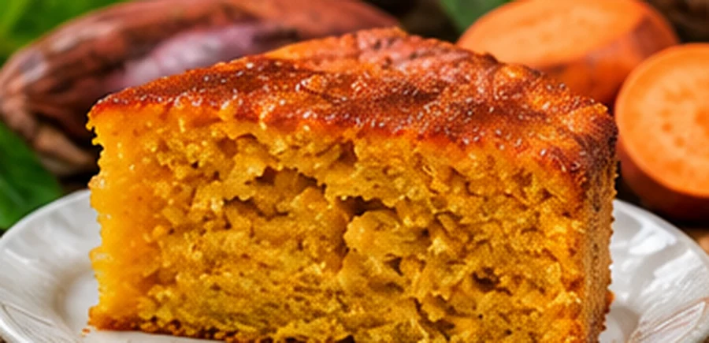
🧺Les ingrédients
- 800 gde patates douces
- 3œufs
- 150 gde sucre de canne
- 80 gde beurre
- 20 clde lait de coco
- 100 gde farine
- raisins secs, cannelle, muscade, vanille, zeste de citron vert
👩🍳La préparation
- Cuire : Faites cuire les patates douces épluchées à l'eau, puis écrasez-les en purée.
- Mélanger : Ajoutez le beurre, le sucre, les œufs, le lait de coco et les épices.
- Lier : Incorporez la farine et les raisins.
- Cuire : Versez dans un moule beurré et faites cuire 50 minutes à 180 °C.
- Servir : Servez tiède ou froid.
🥤Les boissons d'accompagnement
Café de Guadeloupe
Le café « Bonifieur » des hauteurs de Basse-Terre
Chocolat pays
Cacao local fondu dans le lait, à la cannelle et à la muscade
Rhum vieux de Guadeloupe
Rhum vieilli en fût de chêne · pour les adultes
Sucre à coco (tablettes coco)

🧺Les ingrédients
- 1noix de coco
- 300 gde sucre de canne
- 10 cld'eau
- cannelle, zeste de citron vert, vanille, un peu de colorant (facultatif)
👩🍳La préparation
- Râper : Ouvrez la noix et râpez finement la chair.
- Le sirop : Faites bouillir le sucre et l'eau avec la cannelle et le zeste.
- Cuire : Ajoutez la coco râpée et faites cuire en remuant sans arrêt, jusqu'à ce que le mélange se détache de la casserole.
- Former : Déposez des petits tas sur une feuille ou une plaque huilée, aplatissez-les.
- Sécher : Laissez refroidir et durcir.
🥤Les boissons d'accompagnement
Café de Guadeloupe
Le café « Bonifieur » des hauteurs de Basse-Terre
Eau de coco
L'eau d'une noix de coco verte, sans alcool
Chocolat pays
Cacao local fondu dans le lait, à la cannelle et à la muscade
Pâté coco

🧺Les ingrédients
- 400 gde farine
- 200 gde beurre
- 100 gde sucre
- 1œuf + 1 jaune pour dorer
- 400 gde confiture de coco
- vanille, muscade
👩🍳La préparation
- La pâte : Sablez la farine et le beurre, ajoutez le sucre, l'œuf et la vanille. Laissez reposer.
- Découper : Étalez la pâte et découpez des disques.
- Garnir : Déposez une cuillère de confiture de coco sur chaque disque.
- Fermer : Repliez en chausson et soudez les bords à la fourchette. Dorez au jaune d'œuf.
- Cuire : Faites cuire 25 minutes à 180 °C.
🥤Les boissons d'accompagnement
Café de Guadeloupe
Le café « Bonifieur » des hauteurs de Basse-Terre
Chocolat pays
Cacao local fondu dans le lait, à la cannelle et à la muscade
Eau de coco
L'eau d'une noix de coco verte, sans alcool
Doucelettes

🧺Les ingrédients
- 40 clde lait concentré sucré
- 200 gde coco râpée
- 100 gde sucre
- vanille, cannelle, zeste de citron vert
👩🍳La préparation
- Mélanger : Dans une casserole, mélangez le lait concentré, le sucre, la coco et les parfums.
- Cuire : Faites cuire à feu doux en remuant constamment.
- Épaissir : Quand la pâte devient épaisse et se décolle, retirez du feu.
- Couler : Étalez-la sur une plaque beurrée.
- Découper : Découpez en carrés avant qu'elle ne durcisse complètement.
🥤Les boissons d'accompagnement
Café de Guadeloupe
Le café « Bonifieur » des hauteurs de Basse-Terre
Eau de coco
L'eau d'une noix de coco verte, sans alcool
Chocolat pays
Cacao local fondu dans le lait, à la cannelle et à la muscade
Kilibibi

🧺Les ingrédients
- 250 gde maïs sec (ou de farine de maïs)
- 100 gde sucre de canne
- sel, un peu de cannelle
👩🍳La préparation
- Griller : Faites griller les grains de maïs dans une poêle sans matière grasse, en remuant.
- Moudre : Réduisez-les en farine fine au moulin ou au mixeur.
- Mélanger : Mélangez la farine avec le sucre, la cannelle et une pincée de sel.
- Tasser : Tassez le mélange dans de petits cornets de papier.
- Déguster : On le mange tel quel, en petites bouchées.
🥤Les boissons d'accompagnement
Eau de coco
L'eau d'une noix de coco verte, sans alcool
Chocolat pays
Cacao local fondu dans le lait, à la cannelle et à la muscade
Café de Guadeloupe
Le café « Bonifieur » des hauteurs de Basse-Terre
Confiture de goyave

🧺Les ingrédients
- 1,5 kgde goyaves mûres
- 800 gde sucre
- 1citron vert
- bâton de cannelle, vanille
👩🍳La préparation
- Préparer : Lavez les goyaves, coupez-les en morceaux.
- Cuire : Faites-les cuire 15 minutes avec un peu d'eau.
- Passer : Passez-les au moulin à légumes pour retirer les petits pépins.
- Confire : Ajoutez le sucre, le jus de citron et les épices et faites cuire 30 minutes en remuant.
- Mettre en pots : Versez dans des pots ébouillantés et fermez aussitôt.
🥤Les boissons d'accompagnement
Café de Guadeloupe
Le café « Bonifieur » des hauteurs de Basse-Terre
Chocolat pays
Cacao local fondu dans le lait, à la cannelle et à la muscade
Jus de goyave
Jus de fruit pays, sans alcool
Bananes flambées
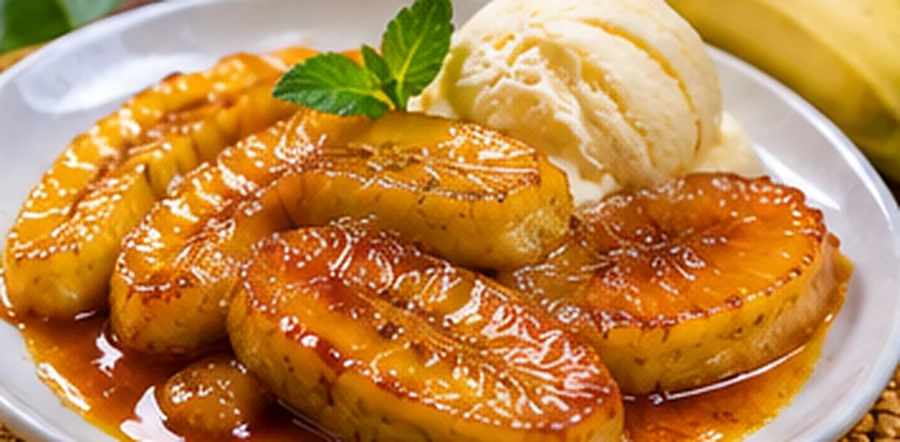
🧺Les ingrédients
- 4bananes mûres
- 40 gde beurre
- 50 gde sucre de canne
- 1citron vert
- 5 clde rhum
- cannelle, vanille
👩🍳La préparation
- Couper : Épluchez les bananes et coupez-les en deux dans la longueur.
- Dorer : Faites fondre le beurre dans une poêle et dorez les bananes des deux côtés.
- Caraméliser : Saupoudrez de sucre et de cannelle, ajoutez le jus de citron.
- Flamber : Un adulte verse le rhum chaud et l'enflamme avec précaution.
- Servir : Servez aussitôt, avec une boule de sorbet coco.
🥤Les boissons d'accompagnement
Café de Guadeloupe
Le café « Bonifieur » des hauteurs de Basse-Terre
Eau de coco
L'eau d'une noix de coco verte, sans alcool
Rhum vieux de Guadeloupe
Rhum vieilli en fût de chêne · pour les adultes
Gâteau renversé à l'ananas

🧺Les ingrédients
- 1ananas
- 100 gde sucre pour le caramel
- 3œufs
- 150 gde sucre
- 150 gde farine
- 100 gde beurre fondu
- levure, vanille, rhum ou jus d'ananas
👩🍳La préparation
- Le caramel : Faites un caramel et versez-le au fond d'un moule.
- L'ananas : Disposez des tranches d'ananas sur le caramel.
- La pâte : Battez les œufs et le sucre, ajoutez le beurre, la farine, la levure et la vanille.
- Cuire : Versez sur l'ananas et faites cuire 40 minutes à 180 °C.
- Renverser : Démoulez encore tiède, en retournant le gâteau sur un plat.
🥤Les boissons d'accompagnement
Café de Guadeloupe
Le café « Bonifieur » des hauteurs de Basse-Terre
Jus de maracudja
Fruit de la passion pressé, sans alcool
Rhum vieux de Guadeloupe
Rhum vieilli en fût de chêne · pour les adultes
Salade de fruits pays
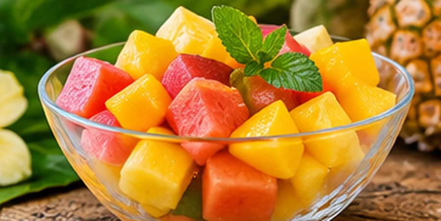
🧺Les ingrédients
- 1mangue
- 1petit ananas
- 2bananes
- 1papaye
- 3fruits de la passion (maracudjas)
- 2citrons verts
- sucre de canne, vanille, menthe
👩🍳La préparation
- Éplucher : Épluchez et coupez les fruits en dés.
- Le sirop : Mélangez le jus des citrons, le sucre et la vanille.
- La passion : Ajoutez la pulpe des fruits de la passion.
- Mélanger : Versez le sirop sur les fruits et mélangez délicatement.
- Servir : Servez frais, avec quelques feuilles de menthe.
🥤Les boissons d'accompagnement
Eau de coco
L'eau d'une noix de coco verte, sans alcool
Jus de maracudja
Fruit de la passion pressé, sans alcool
Jus de goyave
Jus de fruit pays, sans alcool
Pain au beurre et chocolat de communion

🧺Les ingrédients
- 500 gde farine
- 1sachet de levure de boulanger
- 100 gde beurre
- 50 gde sucre
- 2œufs
- 15 clde lait
- 200 gde chocolat pays (bâton de cacao)
- 1,5 lde lait
- 1 c. à soupede fécule
- sucre, cannelle, muscade, vanille, zeste de citron vert
👩🍳La préparation
- Le pain : Pétrissez farine, levure, sucre, œufs, lait et beurre. Laissez lever 1 h 30, façonnez une grande tresse et laissez encore lever.
- Cuire le pain : Dorez et faites cuire 30 minutes à 180 °C.
- Le chocolat : Râpez le cacao et faites-le fondre dans un peu d'eau avec les épices et le zeste.
- Lier : Ajoutez le lait et le sucre, puis la fécule délayée pour épaissir.
- Servir : Servez le chocolat bien chaud avec des tranches de pain au beurre.
🥤Les boissons d'accompagnement
Chocolat pays
Cacao local fondu dans le lait, à la cannelle et à la muscade
Café de Guadeloupe
Le café « Bonifieur » des hauteurs de Basse-Terre
Eau de coco
L'eau d'une noix de coco verte, sans alcool
Jus de groseille pays

🧺Les ingrédients
- 300 gde calices frais de groseille pays (oseille de Guinée)
- 2 ld'eau
- 250 gde sucre de canne
- cannelle, girofle, gingembre, zeste de citron vert
👩🍳La préparation
- Laver : Lavez les calices rouges et retirez la graine du centre.
- Infuser : Faites bouillir l'eau avec les épices, versez sur les calices et laissez infuser jusqu'au refroidissement.
- Filtrer : Filtrez le jus, qui doit être d'un beau rouge.
- Sucrer : Ajoutez le sucre et mélangez bien.
- Servir : Servez bien frais, avec des glaçons.
🥤Les boissons d'accompagnement
Jus de groseille pays
Infusion de fleurs d'oseille de Guinée, boisson de Noël, sans alcool
Eau de coco
L'eau d'une noix de coco verte, sans alcool
Citronnade au sirop de batterie
Citron vert, eau et sirop de canne, sans alcool
Chodo

🧺Les ingrédients
- 1 lde lait
- 4jaunes d'œufs
- 120 gde sucre
- 1 c. à soupede fécule
- cannelle, muscade, vanille, zeste de citron vert
👩🍳La préparation
- Infuser : Faites chauffer le lait avec la cannelle, la vanille et le zeste.
- Battre : Battez les jaunes avec le sucre et la fécule.
- Mélanger : Versez le lait chaud sur les jaunes en fouettant.
- Épaissir : Remettez sur feu doux et remuez sans faire bouillir, jusqu'à ce que la crème nappe la cuillère.
- Servir : Servez chaud, saupoudré de muscade.
🥤Les boissons d'accompagnement
Chocolat pays
Cacao local fondu dans le lait, à la cannelle et à la muscade
Café de Guadeloupe
Le café « Bonifieur » des hauteurs de Basse-Terre
Eau de coco
L'eau d'une noix de coco verte, sans alcool